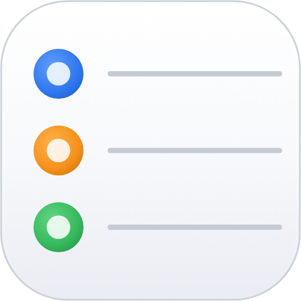
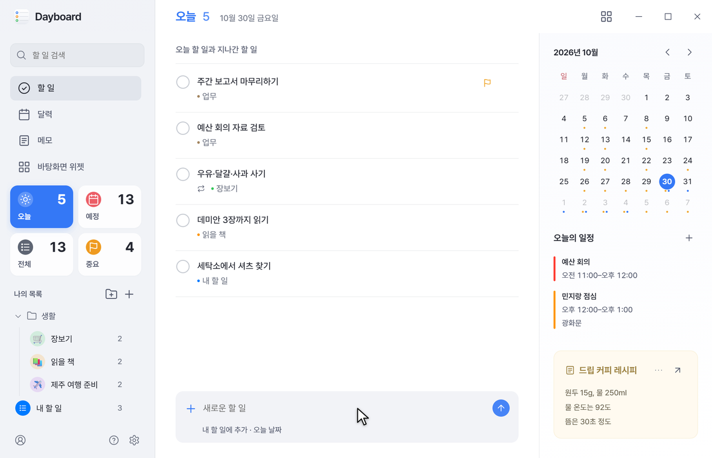
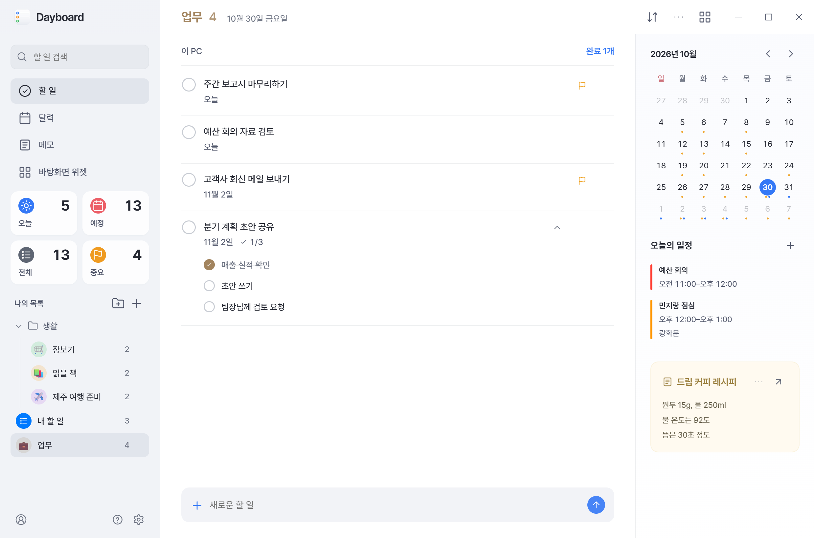
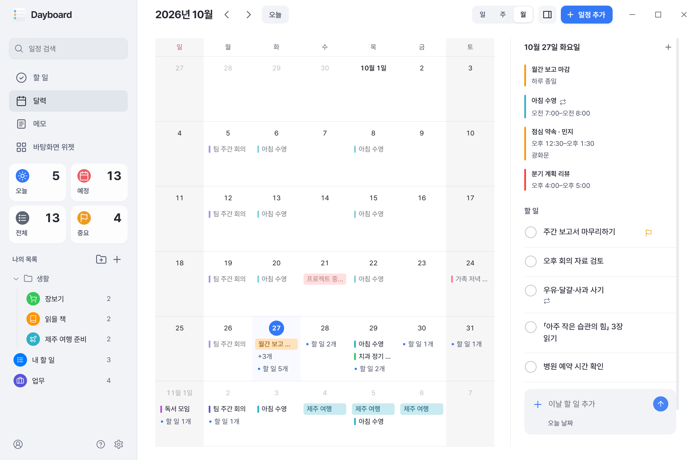
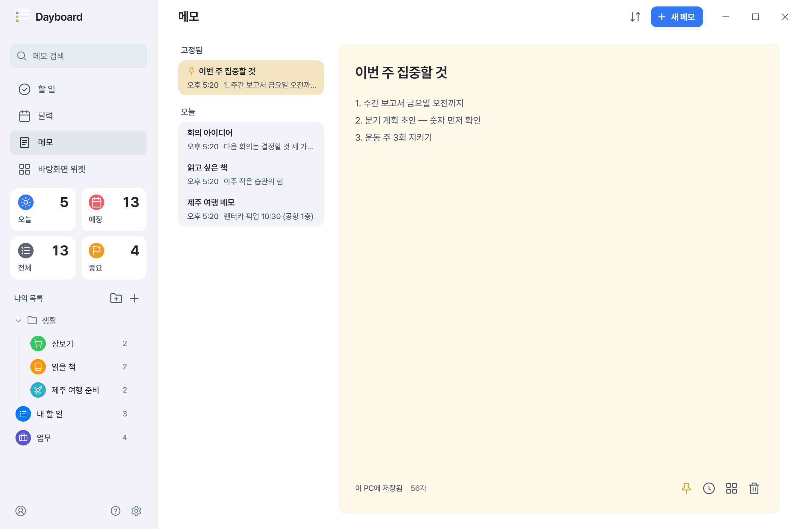
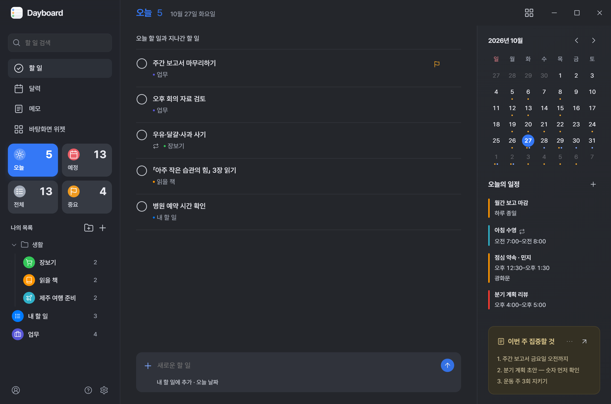
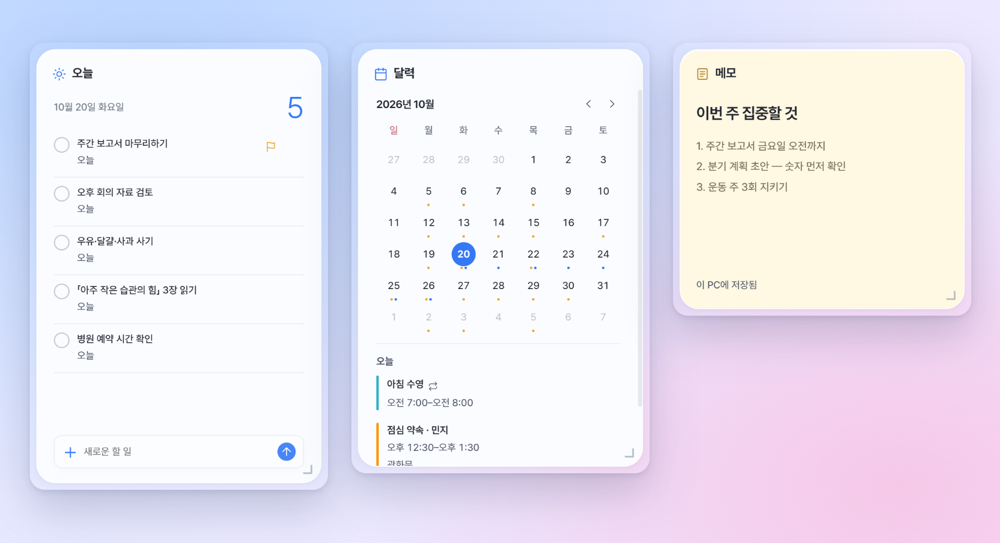

Dayboard
Mac·iPhone처럼 깔끔하게,
Windows에서 빠릿하게.
할 일·달력·메모를 한 앱에서, 바탕화면 위젯으로.
무료 · Windows x64 · 오픈 소스(MIT)

만든 이유
Mac·iPhone의 미리 알림·캘린더·메모 앱과 위젯은 보기 좋고 쓰기 편해요. Windows에서도 그렇게 쓰고 싶어서 직접 만들었어요. 화면은 깔끔하게, 움직임은 빠릿하게. 이 두 가지를 기준으로 다듬고 있어요.
보기 좋게
정돈된 화면과 유리처럼 비치는 바탕화면 위젯. 투명하게 두면 바탕화면 밝기를, 불투명하게 두면 앱의 라이트·다크 모드를 따라요.
빠릿하게
데이터가 내 PC에 있어서 화면이 바로 열려요. 「내일 오후 3시 회의」처럼 쓰면 날짜까지 들어가요.
한곳에
Microsoft·Google·iCloud 계정을 연결하면 다른 PC·iPhone·Android와 동기화돼요. 계정 없이도 쓸 수 있어요.
가입·광고 없이
서버도, 회원 가입도, 광고도 없어요. 지운 메모는 30일 남고, 메모마다 이전 버전을 되살릴 수 있어요.





설치
- 최신 릴리스에서
Dayboard-<버전>.exe를 받아 실행하세요. 관리자 권한은 필요 없어요. - 설치한 뒤에는 새 버전이 나오면 알아서 내려받아져요. 설정에서 「지금 다시 시작해 적용」을 누르면 새 버전으로 바뀌어요.
- 아직 서명되지 않은 설치 파일이라 Windows 스마트 앱 컨트롤이 처음에 막을 수 있어요. 잠시 뒤 다시 실행해 주세요.
Google 계정 연결
Google의 공식 로그인 화면에서 연결해요. 요청하는 권한은 Google Tasks·캘린더 읽기와 편집, 메모와 목록·달력 보기 설정을 내 다른 PC와 맞추기 위한 드라이브의 Dayboard 전용 숨은 폴더, 계정 확인용 이메일·프로필뿐이에요. 받은 데이터는 내 PC에만 두고 개발자나 다른 곳으로 보내지 않아요. 앱의 「계정」 화면이나 Google 계정 권한 페이지에서 언제든 끊을 수 있어요. 자세한 내용은 개인정보처리방침에 있어요.